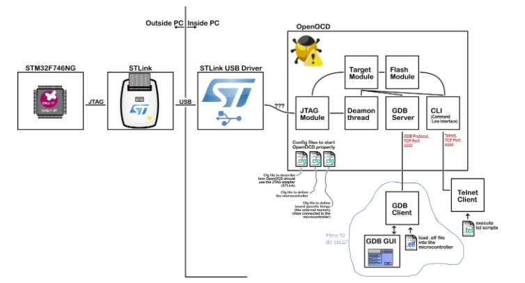
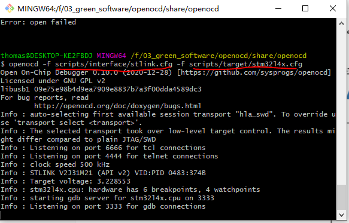
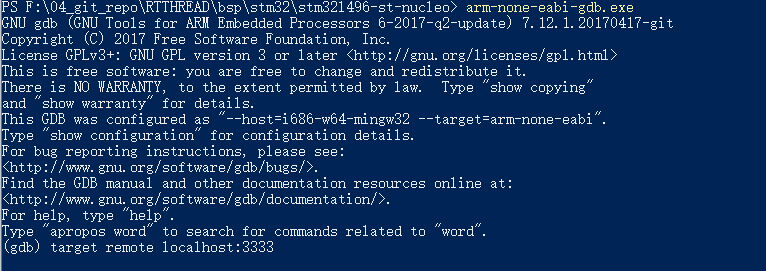
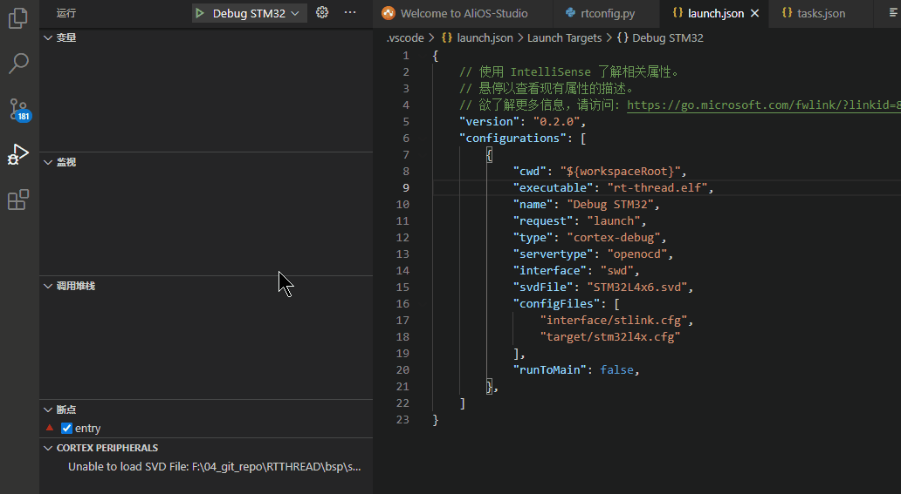
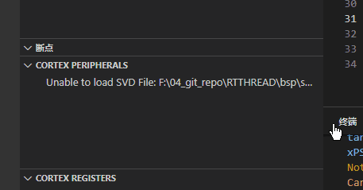
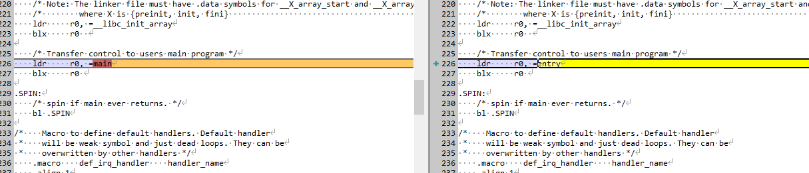

11. VSCode 小技巧
更全面的信息可以参考官方 调试手册 ，
11.1. 快捷键
ctrl + shift + p 显示命令
ctrl + alt + F 格式化文件
11.2. stm32 调试RT-THREAD
RT-THREAD 如何用vscode来调试代码呢？
写代码分为以下两步
编译 clean 这个的配置在task.json里面，快捷键是ctrl + shift + b
调试 这个是在launch.json里面配置，这个配置完了之后，在debug哪里可以看到相应的配置，快捷键F5
11.2.1. 调试
我们先来看看有ARM哪些调试器
Segger J-Link GDB Server (https://www.segger.com/) (https://wiki.segger.com/J-Link_Visual_Studio_Code)
PE-Micro GDB Server (http://www.pemicro.com)
Texane’s St-Link Utils (https://github.com/stlink-org/stlink)
Black Magic Probe Embedded GDB server (https://github.com/blacksphere/blackmagic/wiki)
PyOCD (https://github.com/mbedmicro/pyOCD)
OpenOCD (Note: Please use the latest version, 0.11.0-rc1 when writing this, prebuilt binaries for windows)
QEMU Emulated Environment
J-link就是那个黑黑的盒子
st-link是STM32公司特有的
openocd 是一款开源的比较强大的软件
怎么理解呢，可以这么理解segger jlink和st-link以及openocd都是一家公司，你理解为一家公司，每个公司都会为一种特定的芯片商服务，比如jlink就对黑色的jlink比较擅长，st-link就是对stm32的芯片比较擅长。
而openocd既可以适配jlink也可以适配st-link
OpenOCD（Open On-Chip Debugger）开源片上调试器，是一款开源软件，最初是由Dominic Rath同学还在大学期间发起的（2005年）项目。OpenOCD旨在提供针对嵌入式设备的调试、系统编程和边界扫描功能。
11.2.2. 调试原理

一般如果采用GDB调试的时候，一般需要开一个GDB server，比如j-link里面的GDB server。 ST-LINK SERVER
GDB client端就是我们常用的arm-none-eabi-gdb或者gdb一个client端。
server通常会开一个端口来接收client端的连接，所以先开server，开server的时候，如下图

这个时候可以从info里面看到port 3333 这个时候server就起来了。
后面我们就要起一个client端

输入命令： target remote localhost:3333
这个时候，就可以连上远端了。这个GDB server端，可以是segger jlink公司的，也可以是openocd公司的，也可以是st-link公司的GDB server。这个就是上层调试软件的目的。
而client端的GDB client，都是arm-none-eabi.gdb.exe 直接连接，通过端口号或者其他口都可以连接上。所以也可以远程连接。
所以，对于你如果既要用st-link又要用jlink等操作，你可以直接学习下openocd的GDB server，这个是对大部分的调试器都支持的。不管你手上的是ST-LINK还是j-link还是CMSIS-DAP。
都可以支持，
openocd的官方文件也是超级全的。
https://blog.csdn.net/wxh0000mm/article/details/84788128
http://openocd.org/doc-release/html/GDB-and-OpenOCD.html#Sample-GDB-session-startup
11.2.3. CMSIS-DAP
什么是CMSIS-DAP呢，这个是DAPLINK的，是mbed，就是ARM公司自己研发的一种调试器，这种调试器对于大部分的ARM都是可以适配的。
11.2.4. segger- JLINK
这个是一家公司，也比较有名，生态也非常好。
11.2.5. ST- LINK
ST-LINK是专门服务于STM32的
11.2.6. vscode 配置 launch.json
首先如果使用的是cortex的话，可以下载一个vscode插件cortex-debug
下完之后，如下点击，选择openocd，这个是支持st-link和jlink的。
launch.json
然后我们就需要填好配置了
{
// 使用 IntelliSense 了解相关属性。
// 悬停以查看现有属性的描述。
// 欲了解更多信息，请访问: https://go.microsoft.com/fwlink/?linkid=830387
"version": "0.2.0",
"configurations": [
{
"cwd": "${workspaceRoot}",
"executable": "rt-thread.elf",
"name": "Debug STM32",
"request": "launch",
"type": "cortex-debug",
"servertype": "openocd",
"interface": "swd",
"svdFile": "STM32L4x6.svd",
"configFiles": [
"interface/stlink.cfg",
"target/stm32l4x.cfg"
],
"runToMain": false,
},
]
}
主要填写的有
executable ： 可以执行的elf文件（注意这个编译的时候最好带-g， 不然断点调试不到代码）
name ： 这个是在小虫子那里显示的名称
interface: 这个是选择swd或者jtag
svdFile： 这个是芯片的外设文件，加上这个文件可以看到外设寄存器地址和名称，这个文件可以在keil里面找到
configFiles： 这个就要选择stlink的配置和芯片target的配置这个都是在openocd目录下面有相应的配置的，如果没有，可以去厂商寻找，一般eclipse都是支持openocd，都会有
runToMain： 这个是否跑到main
其他参数可以参考地址 launch config
配置好这些之后，就可以按F5进入调试了。
这边有个加断点的小技巧，很方便

Once a debug session starts, the Debug toolbar will appear on the top of the editor.

Continue / Pause F5
Step Over F10
Step Into F11
Step Out Shift+F11
Restart Ctrl+Shift+F5
Stop Shift+F5
汇编调试
汇编显示在调试控制台里面输入命令disassemble可以显示
disass 汇编执行下一个命令 si
FAQ
11.2.7. 单步进行汇编调试
vscode按F5进入debug单步调试
在GDB中
使用si和ni。与s与n的区别在于：s与n是C语言级别的单步调试，si与ni是汇编级别的单步调试。
F11相当于s
F10相当于n
11.2.8. 能够实时看到寄存器值的变化。
使用gdb时增加-tui选项，打开gdb后运行layout regs命令。注意最好加上-tui，否则很大可能会出现花屏现象。
11.3. Cortex debug
11.4. 支持新的ARM开发板到RTTHREAD上的GCC 需要注意事项
当你的芯片是ARM的时候，而需要支持GCC的时候，在调试方面可以采用vscode来操作。
主要会遇到一些坑，我这边先记下来
11.4.1. entry
入口函数，通常ARM官方给的都是main为入口函数，我们需要在starupxxxx.S里面将main改成entry

11.4.2. ld特定标号
在board/linker_scripts/link.lds 中FLASH中需要添加如下标号
/* section information for finsh shell */
. = ALIGN(4);
__fsymtab_start = .;
KEEP(*(FSymTab))
__fsymtab_end = .;
. = ALIGN(4);
__vsymtab_start = .;
KEEP(*(VSymTab))
__vsymtab_end = .;
/* section information for initial. */
. = ALIGN(4);
__rt_init_start = .;
KEEP(*(SORT(.rti_fn*)))
__rt_init_end = .;
. = ALIGN(4);
PROVIDE(__ctors_start__ = .);
KEEP (*(SORT(.init_array.*)))
KEEP (*(.init_array))
PROVIDE(__ctors_end__ = .);
. = ALIGN(4);
这些标号是和初始化以及一些finish cmd相关的。
11.4.3. rtconfig.py
这个文件夹里面gcc是用来编译的编译选项，这边要设置arm-none-eabi-gcc的路径
EXEC_PATH = r’.’
这边需要注意的是，尽量少用
-ffunction-sections -fdata-sections
这个有可能会优化一些symbol
11.4.4. 生成hex文件
如果你要生成hex文件的话，需要添加如下命令
POST_ACTION = OBJCPY + ' -O ihex $TARGET rtthread.hex\n' + SIZE + ' $TARGET \n'
11.5. printf
代码里面千万不能有printf，不然调试起来会比较麻烦。
参考：